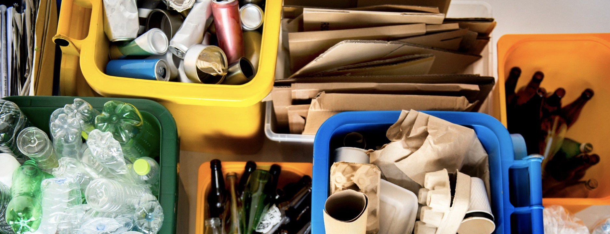
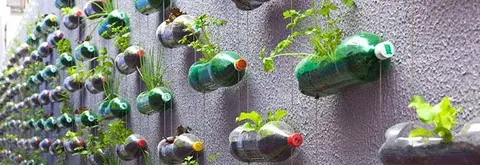
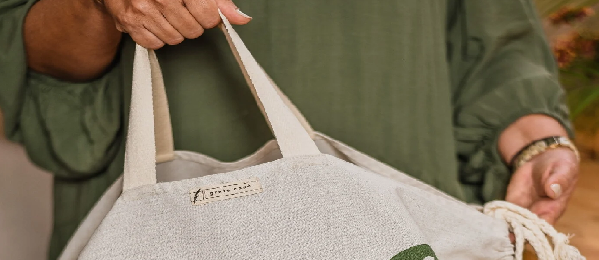
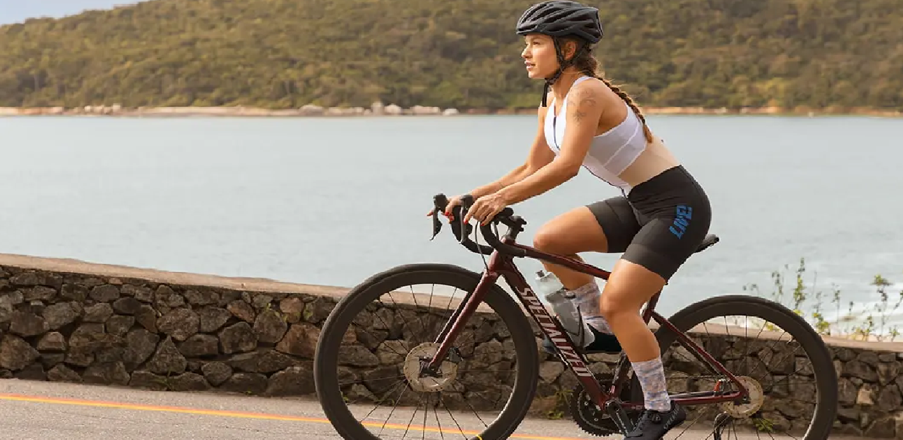
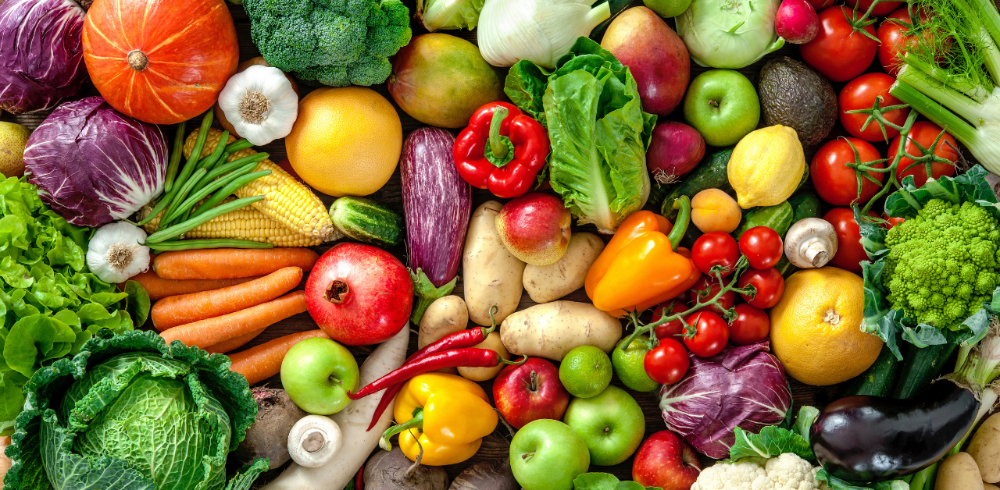
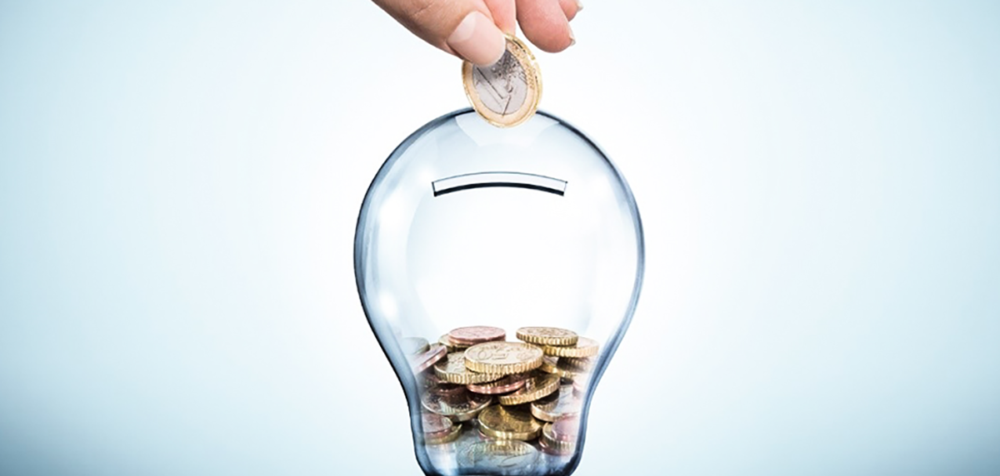

Hoje em dia ouvimos muito sobre sustentabilidade, e principalmente sobre como nós enquanto sociedade devemos tomar partido sobre as mudanças climáticas, adotando hábitos mas sustentáveis. As vezes nos enquanto indivíduos pensamos que isso está muito longe da gente, e que nos não somos capazes de fazer a diferença para o nosso planeta. Então aqui vão uma lista de hábitos sustentáveis para termos no nosso dia a dia que podem sim fazer a diferença.
Um ato simples, mas que faz muita diferença na diminuição da quantidade de resíduo que é destinada a aterros sanitários e lixões. O processo de reciclagem possibilita que os materiais voltem ao ciclo produtivo sem utilizar novos recursos naturais. Então, separe vidros, plásticos, metais e papéis. Eles podem ser enviados para coleta seletiva de sua cidade, cooperativas ou catadores.
Tenha cuidado com itens como: baterias, lâmpadas, equipamentos eletrônicos, medicamentos e óleo de cozinha, que são altamente poluentes, devem ser levados para ecopontos específicos - supermercados, farmácias ou unidades especializadas em recolher esses materiais.
Este hábito além de ser sustentável também é ótimo para os amantes de uma gambiarra. Reutilizar o que compramos colabora para a diminuição do consumo excessivo. Assim, o volume de lixo que geramos em nossas casas também diminui, facilitando na separação do lixo.
Basta você trocar o conteúdo do produto em questão, assim você economiza dinheiro e ainda gera menos lixo para o ambiente.
O plástico é um dos materiais mais poluentes hoje em dia, isso acontece pois ele é usado em excesso e também porque este material demora de 450 a 500 anos para se decompor. Sendo assim, as sacolas reusáveis são a melhor solução. As famosas ecobags podem ser uma opção bem mais sustentável.
Os carros e automóveis no geral liberam uma grande quantidade de monóxido de carbono, isso acelera o efeito estufa. Para conter isso evite uso de carro para distancias curtas, opte pela caminhada ou pela bicicleta, que além de ser saudável para você também é para o planeta.
Dê preferência ao consumo de alimentos orgânicos, preferencialmente frutas e verduras da época, pois são mais saudáveis e exigem menor uso de agrotóxicos e fertilizantes.
Feche a torneira enquanto estiver escovando os dentes, lavando louça ou tomando banho, isso era economizar água e dinheiro. Não utilize mangueira para lavar casa ou calçada o carro.
Apague as luzes de ambientes que não estão sendo utilizados. Tire da tomada TV, DVD, computador e demais aparelhos elétricos que não estiverem sendo utilizados. Novamente uma atitude que seus bolsos vão adorar.
Essencial para evitar consumismo. Controle o valor das contas de água, luz, telefone e gás mês a mês, visando a economizar. Sempre pesquise preço de tudo, mesmo ao comprar itens baratos.
Se a embalagem de um produto não lhe for útil não o descarte, tente doar ou trocar com alguém. Sempre de preferência a empresas com embalagens recicláveis. Um bom exemplo é a nossa empresa, a Fitotec, sempre adotamos práticas sustentáveis na fabricação de nossos produtos. Tente acessar mais o nosso site e ver se encontra um produto de seu agrado.
Vale sempre ressaltar o que hoje em dia o maior causador de poluição não é o consumidor, mas sim as grandes empresas que não se preocupam em usar técnicas sustentáveis e só se preocupam com o lucro. Muitas vezes as empresas colocam a culpa da poluição nos consumidores para criar uma nuvem de fumaça. Aqui na Fitotec conscientizados nossos clientes, mas também adotamos esses hábitos sustentáveis para proteger nosso único lar.